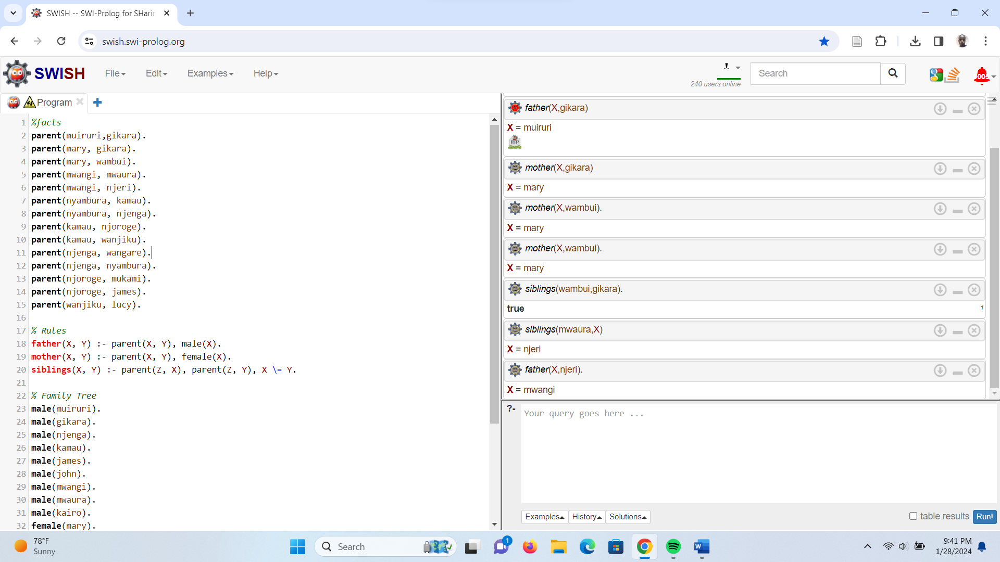

Description: This project implements a family tree in Prolog, representing facts and relationships about my family extending to a minimum of four generations. The program includes rules such as siblings(), father(), and mother(), which allow querying relationships within the family tree. Users can interact with the program by querying predicates such as mother(X, Y) to find the mother of individual Y or siblings(X, Y) to find siblings of individual X. This Prolog program provides a structured representation of familial relationships and enables users to explore and query the family tree.
Prolog is useful in real life for various applications such as artificial intelligence, natural language processing, expert systems, and symbolic computation. It allows for the development of rule-based systems, making it suitable for tasks that involve logical reasoning, pattern matching, and decision-making. In practical scenarios, Prolog can be used in areas like medical diagnosis, automated planning, information retrieval, and semantic web technologies.
